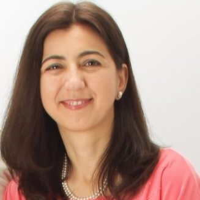
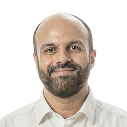
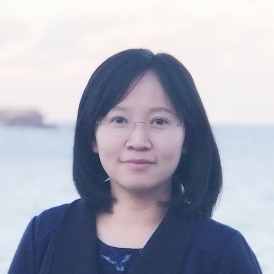
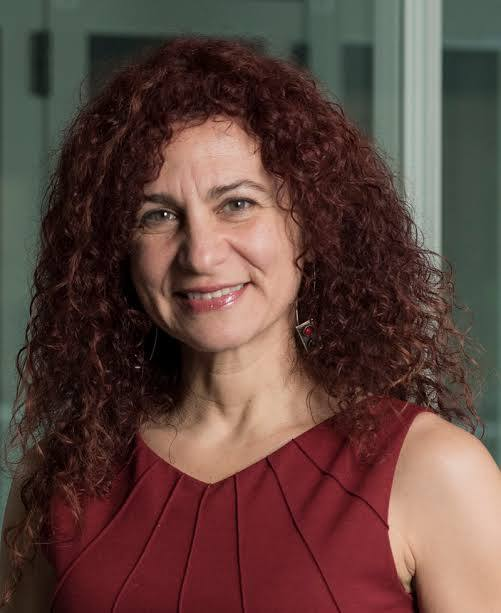
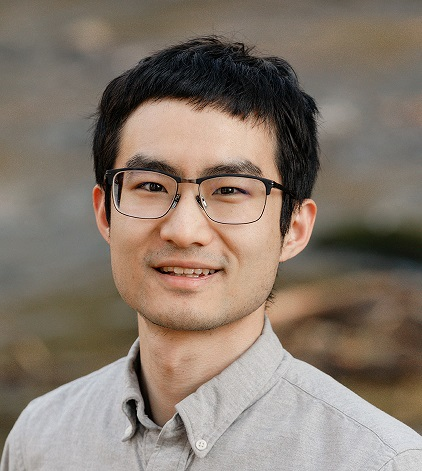

ICDE 2026: Panel Sessions

Room: Av. Duluth
Moderator: Fatma Ozcan, Google, USA
Fatma Özcan is a Principal Engineer at Systems Research@Google. Her current research focuses on GenAI and data management, vector search, platforms and infra-structure for large-scale data analysis, and natural language interfaces to data. Dr Özcan got her PhD degree in computer science from University of Maryland, College Park, and her BSc degree in computer engineering from METU, Ankara. Before joining Google, she was a Distinguished Research Staff Member and a senior manager at IBM Almaden Research Center. She has over 24 years of experience in industrial research, and has delivered core technologies into various IBM and Google products. She is the co-author of the book "Heterogeneous Agent Systems", and co-author of several conference papers and patents. She is an ACM Fellow and serves on the CRA board of directors, and she is the co-chair of CRA-Industry. She received the VLDB Women in Database Research Award in 2022.
Aditya Parameswaran, Profile

Bio. Aditya Parameswaran is an Associate Professor in Computer Science at UC Berkeley, and a co-director of the EPIC Data Lab. Aditya leverages techniques from artificial intelligence, databases, and human-computer interaction to solve hard data challenges. Multiple open-source tools developed in his group have received thousands of GitHub stars (including Modin, Lux, IPyFlow, DocETL)—and have been downloaded tens of millions of times overall across a spectrum of industries. His research was commercialized as a startup, Ponder, in 2021, where he served as Co-founder and President, before its acquisition by Snowflake. Aditya has received the Alfred P. Sloan Research Fellowship, VLDB Early Career Award, the NSF CAREER Award, the TCDE Rising Star Award, along with other recognitions.
Bolin Ding, Profile

Bio. Dr. Bolin Ding is a Researcher & Senior Director, andlead the area of Intelligent System in Tongyi Lab at Alibaba Group. His research interests are generally about making systems intelligent and efficient with machine learning and optimization techniques, with recent focuses on programming frameworks for building LLM agents, systems and algorithms for tuning agent models, efficient data pipelines for training LLMs and agent models, andbuilding novel agent applications (e.g., for data analytics and social science). His research has been extensively integrated into industrial products and solutions. Previously, he also worked on query optimization, data privacy, and federated learning. He publishes in top conferences and journals in related areas, including SIGMOD, VLDB, ICDE, KDD, ICML, NeurIPS, ICLR, and SODA.
Essam Mansour, Profile

Bio. Dr. Essam Mansour is an Associate Professor in the Department of Computer Science and Software Engineering at Concordia University, Montreal, and head of the Concordia Data Systems lab (CoDS). His main research interests lie in AI + Data, knowledge graphs, and agentic AI systems. He currently works on Agentic Enterprise AI for automating data-intensive tasks, with grounded enterprise metadata and governed memory for LLM-based agents over federated and heterogeneous data infrastructure. He has secured over $1.1M in federal and industry funding, with strategic research projects involving Google, IBM, RBC, and National Bank of Canada. His research has resulted in over 50 publications in top-tier venues, including SIGMOD, PVLDB, ICDE, EMNLP, and CCS. He is a regular reviewer for ACM TODS, VLDB Journal, and IEEE TKDE, and serves on the program committees of SIGMOD, PVLDB, and ICDE. Dr. Mansour is General Chair of IEEE ICDE 2026 in Montreal and received Distinguished Reviewer Awards at SIGMOD 2025 and VLDB 2018.
Wenjie Zhang, Profile

Bio. Dr. Wenjie Zhang is a Professor in the School of Computer Science and Engineering at the University of New South Wales, Sydney. Her main research interests lie in large-scale data management and the applications. She serves as an Associate Editor for IEEE TKDE, VLDB Journals and ACM TKDD, and program or organization committee member for international conferences, including PC co-chair of ICDE 2025, DASFAA 2027, APWeb-WAIM 2024 and WISE 2021, tutorial chair for VLDB and ICDE, as well as Area Chair for VLDB and ICDE. Currently, she is a Chair of the Steering Committee for the Australasian Database Conference. Her research has been recognized with the ACM SIGMOD Research Highlight Award, CORE Chris Wallace Research Award, and 19 Best Paper Awards or nominations from conferences including SIGMOD and ICDE. She is an elected Member of the CORE Academy and a Fellow of the Australian Computer Society and the Royal Society of NSW Australia.
Room: Av. Duluth
Moderator: Andy Pavlo, Carnegie Mellon University
Andy Pavlo is an Associate Professor with Indefinite Tenure of Databaseology in the Computer Science Department at Carnegie Mellon University, where he is a member of the CMU Database Group and the Parallel Data Laboratory. His research interests are in database management systems, specifically self-driving and autonomous architectures, transaction processing systems, and large-scale data analytics. He is the recipient of an NSF CAREER Award (2019), an Alfred P. Sloan Research Fellowship (2018), and the ACM SIGMOD Jim Gray Doctoral Dissertation Award (2014). He also received an Early Career Research Award from the VLDB Endowment at VLDB 2021.
Anastasia Ailamaki, Profile

Bio. Anastasia Ailamaki is a Professor of Computer and Communication Sciences at the École Polytechnique Fédérale de Lausanne (EPFL), a visiting researcher at Salesforce, and the co-founder and Chair of the Board of Directors of RAW Labs SA, a Swiss company developing systems to analyze heterogeneous big data from multiple sources efficiently. She earned a Ph.D. in Computer Science from the University of Wisconsin-Madison in 2000. She has received the 2019 ACM SIGMOD Edgar F. Codd Innovations Award and the 2020 VLDB Women in Database Research Award. She is also the recipient of an ERC Consolidator Award (2013), the Finmeccanica endowed chair from the Computer Science Department at Carnegie Mellon (2007), a European Young Investigator Award from the European Science Foundation (2007), an Alfred P. Sloan Research Fellowship (2005), an NSF CAREER award (2002), twelve best-paper awards and three Test-of-Time prizes at international scientific conferences. She has received the 2018 Nemitsas Prize in Computer Science from the President of Cyprus and the 2021 ARGO Innovation Award from the President of the Hellenic Republic. She is an ACM fellow, an IEEE fellow, a member of the Academia Europaea and the US National Academy of Engineering, and has served as an elected member of the Swiss, the Belgian, the Greek, and the Cypriot National Research Councils.
Tianzheng Wang, Profile

Bio. Tianzheng Wang is an Associate Professor in the School of Computing Science at Simon Fraser University (SFU) in Metro Vancouver, Canada. His research centres around the design and implementation of database systems in the context of modern hardware, new programming primitives, and new applications, with work that often extends to related areas such as operating systems, parallel programming, and distributed systems. Prior to joining SFU, he spent one year at Huawei Canada Research Centre in Toronto as a research engineer. His work has been assimilated by cloud vendors and startups, and recognized by awards including the ACM SIGMOD Best Paper Award (2025), ACM SIGMOD Research Highlight Awards (2021 and 2023), and the 2019 IEEE TCSC Award for Excellence in Scalable Computing (Early Career Researchers).